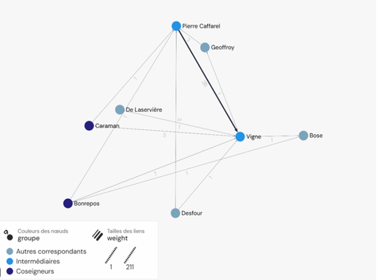
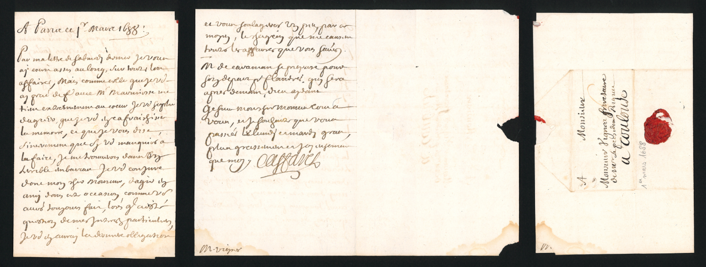
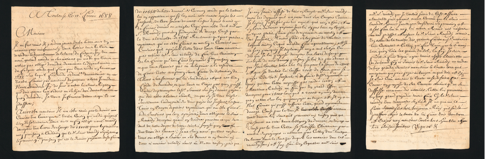

Volet II
Administrer le canal
La mort de Pierre-Paul Riquet, le 1er octobre 1680, marque une rupture dans l’organisation du canal. L’entreprise ne repose désormais plus sur l’autorité d’un seul homme. Ses fils héritent du canal et en assurent ensemble la gestion.
Cette nouvelle organisation modifie aussi les pratiques d’écriture. Les correspondances montrent qu’après 1680 les secrétaires occupent une place croissante dans l’administration quotidienne. Ils rédigent, copient et expédient les lettres au nom des coseigneurs et deviennent des intermédiaires essentiels dans la circulation de l’information.
Une administration désormais partagée
Après la disparition de Pierre-Paul Riquet, ses héritiers doivent poursuivre l’exploitation et l’administration du canal. Jean-Mathias de Riquet et son frère Pierre-Paul de Riquet, comte de Caraman, exercent cependant d’autres fonctions qui ne leur permettent pas d’assurer seuls le suivi quotidien de toutes les affaires.
Ils s’appuient donc sur leurs secrétaires. La correspondance fait apparaître une organisation dans laquelle plusieurs hommes interviennent pour transmettre les informations, préparer les échanges et assurer la continuité des décisions.

Écrire pour administrer
Les secrétaires au cœur des échanges
Le secrétaire ne se limite pas à recopier des lettres. Il reçoit des informations, prépare les écrits, transmet les décisions et conserve une partie de la mémoire administrative de son maître. Sa maîtrise de l’écrit lui donne ainsi une place essentielle dans le fonctionnement quotidien du canal.
Les correspondances conservées permettent de suivre ce rôle à travers deux figures particulièrement importantes : Pierre Caffarel, secrétaire de Jean-Mathias de Riquet, et Vigne, secrétaire de Pierre-Paul de Riquet, comte de Caraman.
Au service de Jean-Mathias
Pierre Caffarel
Pierre Caffarel est avocat au Parlement de Toulouse et secrétaire de Jean-Mathias de Riquet. Sa présence dans les correspondances montre la place prise par les secrétaires dans la nouvelle organisation du canal après 1680.
La lettre du 1er mars 1688 témoigne de cette activité quotidienne. Elle permet d’observer l’écriture administrative non plus à travers la seule figure du propriétaire du canal, mais à travers celui qui rédige et transmet les informations en son nom.
Caffarel apparaît ainsi comme un relais entre Jean-Mathias et les différents acteurs impliqués dans l’administration. Son rôle participe directement à la continuité du fonctionnement du canal.


Au service du comte de Caraman
Vigne
Vigne est le secrétaire de Pierre-Paul de Riquet, comte de Caraman. Pourtant, contrairement à Pierre Caffarel, son parcours demeure très difficile à retracer. Malgré le nombre important de lettres conservées, les recherches menées n’ont permis d’établir que très peu d’éléments sur sa vie.
Ce contraste est particulièrement révélateur du travail sur les archives. Un acteur peut être très présent dans les correspondances tout en restant presque invisible dans les autres sources. Dans le cas de Vigne, ce sont donc avant tout les lettres qui permettent de retrouver son activité auprès du comte de Caraman.
La lettre du 17 février 1688 témoigne de cette place dans l’administration du canal. À travers l’écriture et la transmission des correspondances, Vigne participe au suivi des affaires de son maître. Comme Caffarel auprès de Jean-Mathias, il constitue ainsi l’un des relais sur lesquels repose la gestion du canal après la mort de Pierre-Paul Riquet.
De la construction à l’administration
Les correspondances permettent ainsi de suivre une transformation majeure. Du vivant de Pierre-Paul Riquet, les lettres convergent principalement vers lui. Après sa mort, l’administration devient plus collective et repose davantage sur les secrétaires et les intermédiaires.
Derrière les propriétaires du canal apparaissent donc ceux qui écrivent, copient, transmettent et organisent l’information. L’étude de ces lettres permet de redonner une place à ces acteurs discrets mais indispensables au fonctionnement quotidien de l’entreprise.